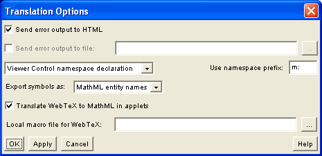

You can open the Translation Options panel from the Options menu on the WebEQ Publisher main screen. These options primarily effect Viewer Control code and Strict MathML generated by the the Publisher.

At the time of this writing, no clear concensus has emerged in the MathML community as to which format to use. Most MathML applications understand all three formats, but some don't. Until there is a clear choice, you will have to experiment to see what works best for you and your readers.
Note: When using a namespace declaration with Mozilla or Math Stylesheets, the "MathML Entity Names" option is not available.